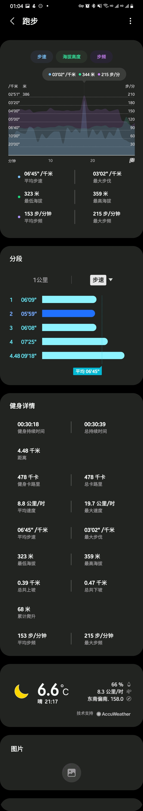

秋冬夜跑
装备¶
- 129-10 = 119 京东旗下的四件套薄绒跑步服 紧身裤，外套，长袖都带薄绒
- 39.9 迪卡侬粉色腰包
- 19.9 两双中帮运动长袜
- 19.9 触屏薄绒手套
- 14.9 魔术头巾
- nike 飞马37
说说选择上面的原因：
首先呢，性价比要高，意思就是尽可能便宜。同样的四件套迪卡侬腰300以上，京东这个100出头就买了，质量也可以接受。
因为这个衣服没有合适的口袋，而且即使有，放手机的话,跑动的时候会晃动，个人不太能接受。选择了带亮色的腰包,手机几乎没有晃动。(晚上安全点，全身黑危险。
头巾用做头部和颈部保暖，因为比较薄，即使将头巾遮到鼻梁处，换气也是能接受的。还可以冷热空气呼吸缓冲。(今天温度大概六七度的样子。
袜子的话,之前看见有14.9的五双特价运动袜,摸了下脚踝松紧带,还是买个稍微贵点的吧。
手套用作手部保暖，最便宜的手套了没得选。这个温度跑步防风保暖够用。
鞋的话，看个人了。之前发现箱根驿传的跑者几乎没人穿三大家的跑鞋都去穿nike，产生了疑问。于是去了解了下nike的科技和系列，顺便也把穿了几年的亚瑟士换掉了。
其他¶
跑步软件现在用的三星健康,手机自带。带语音提示，感觉还可以。想尝试下nike run。
我会把袜子颈部包住紧身裤，手套包住外套，头巾包住半个头部，带上外套帽子，做好防风保暖。（有机会可以买个帽子
做好热身和跑后拉伸。（推荐下滚筒，按压腿部酸爽
衣服穿的体感温度的话,微风,体表略凉,跑起来没啥感觉了。
题外话¶
外面跑的时候，看见个老哥穿了个短裤带着蓝色医用口罩跑，感觉不太合适。
复健记录¶
最后2021-01-03的第一次术后复健的的成绩如下，筋还没完全恢复，脚趾无法完全向下弯曲，有拉扯痛感，向上收缩的话，幅度没有左脚大，可以正常上翘，偶尔疼痛。慢慢来吧。
 觉得自己配速其实有6，还是拉长距离慢跑做好减脂吧。